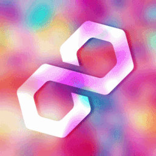

Community Discord italiana · dal 2022
Staskys
Chatting · Eventi · Anime
Una community pronta ad accoglierti e a socializzare con te. Un posto leggero dove chiacchierare, giocare e condividere interessi.
- Membri
- 0
- Online ora
- 0
- In vocale
- 0
Un posto di svago e divertimento.
Staskys è nato il 26 novembre 2022, quasi per caso, ed è diventato qualcosa di molto più di un semplice server: una grande famiglia.
Chat sempre attiva, vocali, eventi e giveaway, uno staff disponibile e un'atmosfera no-toxic.
- 2022Fondazione
- 20252.000 membri e tag ufficiale STASKYS
- 2026Primo torneo vinto e server Minecraft
Tutto quello che c'è su Staskys.
Il server
Canali, vocali, bot e stanze private.
→StaskysMC
Il nostro server Minecraft Fazioni, con stato live.
→Eventi
Prossimi eventi con countdown e i nostri format.
→Livelli
Come si sale di livello e il calcolatore XP.
→Ruoli
Colori, notifiche, giochi e come ottenerli.
→Guide
Mudae, Pokétwo, AniGame, RinBot e gli altri bot.
Annunci dal server.
Caricamento…
Domande frequenti.
Come entro nel server?
Clicca su “Entra nel server”, verificati nel canale verifica e rispondi alle domande iniziali per ricevere i tuoi ruoli.
Come scelgo ruoli e colori?
Da Canali & Ruoli puoi scegliere colore del nome, giochi e notifiche. Trovi l'elenco completo nella pagina Ruoli.
Come salgo di livello?
Scrivendo in chat e stando in vocale. Ai livelli 5, 10, 15, 20 e così via ricevi un nuovo ruolo: vedi la pagina Livelli.
Posso giocare a Minecraft da telefono?
Non ancora: il server supporta solo Minecraft Java Edition su PC.
Come posso supportare Staskys?
Boostando il server, facendo /bump, mettendo il tag STASKYS o seguendoci sui social. Tutto nella pagina Supporta.